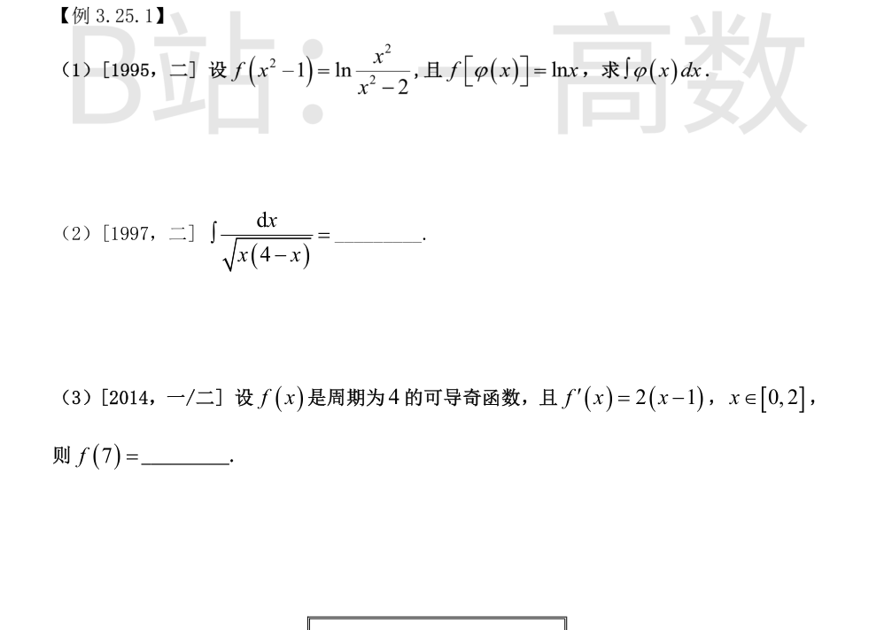
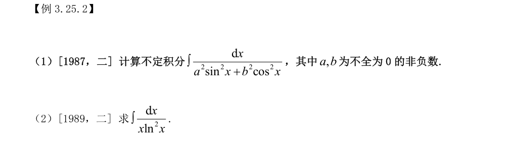
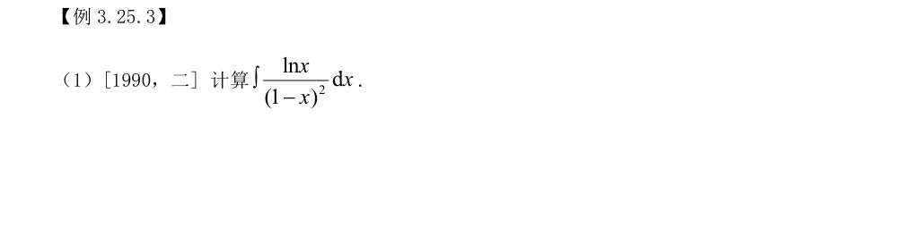
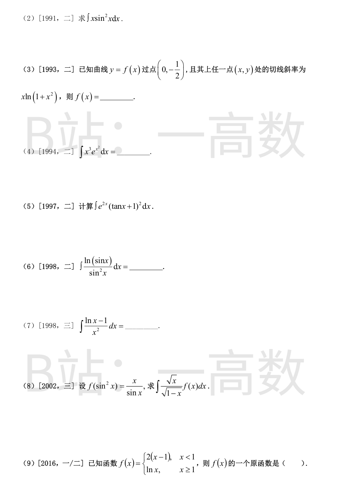
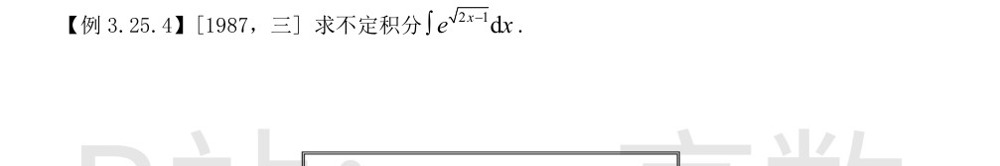
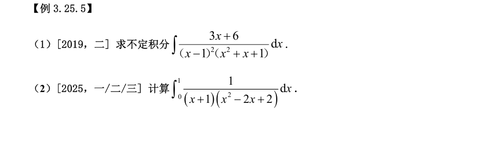
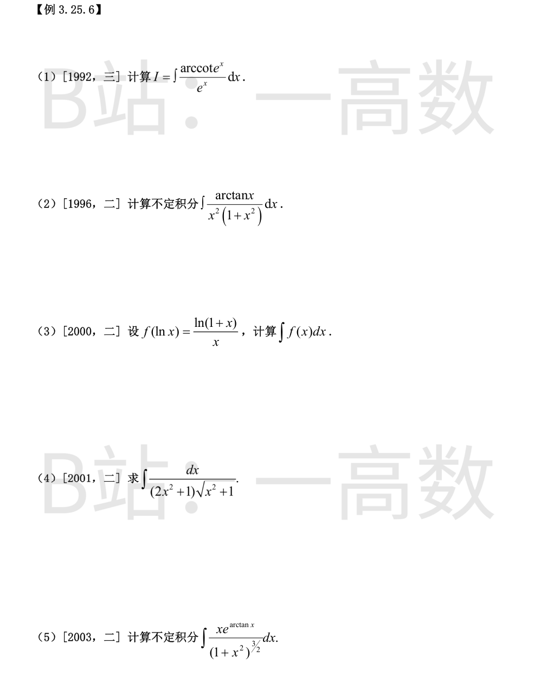

令 $u=x^2-1$，则 $x^2=u+1$，$x^2-2=u-1$，故
$$f(u)=\ln\frac{u+1}{u-1}.$$
令 $u=\varphi(x)$，由 $f[\varphi(x)]=\ln x$ 得
$$\frac{\varphi(x)+1}{\varphi(x)-1}=x\ \Rightarrow\ \varphi(x)+1=x\varphi(x)-x\ \Rightarrow\ \varphi(x)(x-1)=x+1\ \Rightarrow\ \varphi(x)=\frac{x+1}{x-1}.$$
验证：$\dfrac{\varphi+1}{\varphi-1}=\dfrac{\frac{2x}{x-1}}{\frac{2}{x-1}}=x$，正确。
于是
$$\int\varphi(x)\,dx=\int\frac{x+1}{x-1}\,dx=\int\left(1+\frac{2}{x-1}\right)dx=x+2\ln|x-1|+C.$$
配方：$x(4-x)=4-(x-2)^2$，故
$$\int\frac{dx}{\sqrt{x(4-x)}}=\int\frac{d(x-2)}{\sqrt{2^2-(x-2)^2}}=\arcsin\frac{x-2}{2}+C.$$
$f$ 为奇函数且可导 $\Rightarrow f(0)=0$；奇函数的导数为偶函数，故 $f'(x)=2(|x|-1)$ 于 $[-2,2]$。
在 $[0,2]$ 上积分：
$$f(x)=\int 2(x-1)\,dx=x^2-2x+C,$$
由 $f(0)=0$ 得 $C=0$，即 $f(x)=x^2-2x\ (0\le x\le 2)$，于是 $f(1)=-1$。
利用周期 4：
$$f(7)=f(7-8)=f(-1)=-f(1)=-(-1)=1.$$

**情形一：$a>0,\ b>0$。** 分子分母同除 $\cos^2x$：
$$\int\frac{dx}{a^2\sin^2x+b^2\cos^2x}=\int\frac{\sec^2x\,dx}{b^2+a^2\tan^2x}=\frac{1}{b}\int\frac{d\left(\frac{a}{b}\tan x\right)}{1+\left(\frac{a}{b}\tan x\right)^2}=\frac{1}{ab}\arctan\left(\frac{a}{b}\tan x\right)+C.$$
**情形二：$a=0\ (b>0)$。**
$$\int\frac{dx}{b^2\cos^2x}=\frac{1}{b^2}\int d(\tan x)=\frac{\tan x}{b^2}+C.$$
**情形三：$b=0\ (a>0)$。**
$$\int\frac{dx}{a^2\sin^2x}=\frac{1}{a^2}\int d(-\cot x)=-\frac{\cot x}{a^2}+C.$$
$$\int\frac{dx}{x\ln^2x}=\int\frac{d(\ln x)}{\ln^2x}=\int(\ln x)^{-2}\,d(\ln x)=-\frac{1}{\ln x}+C.$$


由 $d\left(\frac{1}{1-x}\right)=\frac{dx}{(1-x)^2}$，分部积分：
$$\int\frac{\ln x}{(1-x)^2}\,dx=\int\ln x\,d\left(\frac{1}{1-x}\right)=\frac{\ln x}{1-x}-\int\frac{1}{1-x}\cdot\frac{1}{x}\,dx.$$
而
$$\int\frac{dx}{x(1-x)}=\int\left(\frac{1}{x}+\frac{1}{1-x}\right)dx=\ln x-\ln|1-x|.$$
故
$$\int\frac{\ln x}{(1-x)^2}\,dx=\frac{\ln x}{1-x}-\ln x+\ln|1-x|+C.$$
求导验证：$\left(\frac{\ln x}{1-x}\right)'=\frac{1}{x(1-x)}+\frac{\ln x}{(1-x)^2}$，$(-\ln x+\ln|1-x|)'=-\frac{1}{x}-\frac{1}{1-x}$，两项相加后分式部分恰好相消，剩 $\dfrac{\ln x}{(1-x)^2}$。
$$\int x\sin^2x\,dx=\int x\cdot\frac{1-\cos 2x}{2}\,dx=\frac{x^2}{4}-\frac{1}{2}\int x\cos 2x\,dx.$$
对后者分部积分（$u=x,\ dv=\cos 2x\,dx$）：
$$\int x\cos 2x\,dx=\frac{x\sin 2x}{2}+\frac{\cos 2x}{4}.$$
故
$$\int x\sin^2x\,dx=\frac{x^2}{4}-\frac{x\sin 2x}{4}-\frac{\cos 2x}{8}+C.$$
求导验证：$\frac{x}{2}-\frac{\sin 2x+2x\cos 2x}{4}+\frac{\sin 2x}{4}=\frac{x(1-\cos 2x)}{2}=x\sin^2x$。
$$f(x)=\int x\ln(1+x^2)\,dx=\frac{1}{2}\int\ln(1+x^2)\,d(1+x^2).$$
对 $\int\ln u\,du=u\ln u-u$ 用 $u=1+x^2$：
$$f(x)=\frac{1}{2}\left[(1+x^2)\ln(1+x^2)-(1+x^2)\right]+C.$$
代入 $f(0)=-\dfrac{1}{2}$：$\dfrac{1}{2}[0-1]+C=-\dfrac{1}{2}$，得 $C=0$。
故
$$f(x)=\frac{(1+x^2)\ln(1+x^2)}{2}-\frac{x^2}{2}-\frac{1}{2}.$$
验证：$f'(x)=x\ln(1+x^2)+x-x=x\ln(1+x^2)$，且 $f(0)=-\frac12$。
令 $u=x^2$，$x^3dx=\dfrac{x^2\,d(x^2)}{2}=\dfrac{u\,du}{2}$：
$$\int x^3e^{x^2}dx=\frac{1}{2}\int ue^u\,du=\frac{1}{2}(u-1)e^u+C=\frac{(x^2-1)e^{x^2}}{2}+C.$$
求导验证：$xe^{x^2}+(x^2-1)xe^{x^2}=x^3e^{x^2}$。
$$\int e^{2x}(\tan x+1)^2dx=\int e^{2x}(\tan^2x+2\tan x+1)dx=\int e^{2x}(\sec^2x+2\tan x)dx.$$
注意到恰好
$$d\left(e^{2x}\tan x\right)=2e^{2x}\tan x\,dx+e^{2x}\sec^2x\,dx=e^{2x}(\sec^2x+2\tan x)dx,$$
故原式 $=e^{2x}\tan x+C$。
$$\int\frac{\ln(\sin x)}{\sin^2x}dx=-\int\ln(\sin x)\,d(\cot x)=-\cot x\ln(\sin x)+\int\cot x\cdot\frac{\cos x}{\sin x}dx.$$
而 $\cot x\cdot\dfrac{\cos x}{\sin x}=\cot^2x=\csc^2x-1$，故
$$\text{原式}=-\cot x\ln(\sin x)+\int(\csc^2x-1)dx=-\cot x\ln(\sin x)-\cot x-x+C.$$
求导验证：$\csc^2x\ln(\sin x)-\cot^2x+\csc^2x-1=\dfrac{\ln(\sin x)}{\sin^2x}+(\csc^2x-\cot^2x-1)=\dfrac{\ln(\sin x)}{\sin^2x}$。
由于
$$d\left(\frac{\ln x}{x}\right)=\frac{\frac{1}{x}\cdot x-\ln x}{x^2}dx=\frac{1-\ln x}{x^2}dx=-\frac{\ln x-1}{x^2}dx,$$
故
$$\int\frac{\ln x-1}{x^2}\,dx=-\frac{\ln x}{x}+C.$$
（也可分部积分：$\int\ln x\,d\left(-\frac1x\right)=-\frac{\ln x}{x}+\int\frac{1}{x^2}dx=-\frac{\ln x}{x}-\frac1x$，再减去 $\int\frac{dx}{x^2}=-\frac1x$ 即得。）
先求 $f$：令 $t=\sin^2x$（$x\in[0,\frac{\pi}{2}]$），则 $\sqrt t=\sin x$，$x=\arcsin\sqrt t$，故
$$f(t)=\frac{\arcsin\sqrt t}{\sqrt t},\qquad f(x)=\frac{\arcsin\sqrt x}{\sqrt x}.$$
代入：
$$\int\frac{\sqrt x}{\sqrt{1-x}}f(x)dx=\int\frac{\arcsin\sqrt x}{\sqrt{1-x}}dx.$$
令 $u=\sqrt x$，$dx=2u\,du$：
$$\int\frac{\arcsin u}{\sqrt{1-u^2}}\cdot 2u\,du=-2\int\arcsin u\,d\left(\sqrt{1-u^2}\right).$$
分部积分：
$$=-2\left[\sqrt{1-u^2}\arcsin u-\int\sqrt{1-u^2}\cdot\frac{du}{\sqrt{1-u^2}}\right]=-2\sqrt{1-u^2}\arcsin u+2u+C.$$
回代 $u=\sqrt x$：
$$\int\frac{\sqrt x}{\sqrt{1-x}}f(x)dx=2\sqrt x-2\sqrt{1-x}\arcsin\sqrt x+C.$$
求导验证：$\dfrac{1}{\sqrt x}+\dfrac{\arcsin\sqrt x}{\sqrt{1-x}}-\dfrac{1}{\sqrt x}=\dfrac{\arcsin\sqrt x}{\sqrt{1-x}}$，恰为被积函数。
分段求原函数：$x<1$ 时 $F(x)=\int 2(x-1)dx=x^2-2x+C_1$；$x\ge1$ 时 $F(x)=\int\ln x\,dx=x\ln x-x+C_2$。
原函数必须处处可导，从而连续：$F(1^-)=1-2+C_1=C_1-1$，$F(1)=0-1+C_2=C_2-1$，故 $C_1=C_2$。取 $C_1=C_2=0$：
$$F(x)=\begin{cases}x^2-2x, & x<1\\ x\ln x-x, & x\ge 1\end{cases}$$
再验证 $x=1$ 处左导数 $\lim_{x\to1^-}(2x-2)=0$，右导数 $\lim_{x\to1^+}\ln x=0$，故 $F'(1)=0=f(1)$，确为原函数。对照选项，此即选项 (A)（本题图片中选项被裁切，选项字母按 2016 年真题标准答案 (A) 抄录；选项 (B)(C)(D) 均在连续性或导数值上不满足）。卡点：图片未含四个选项的具体表达式，字母以真题标准答案为准。

令 $t=\sqrt{2x-1}$，则 $x=\dfrac{t^2+1}{2}$，$dx=t\,dt$：
$$\int e^{\sqrt{2x-1}}dx=\int e^t\cdot t\,dt=\int t\,d(e^t)=te^t-\int e^t\,dt=(t-1)e^t+C.$$
回代 $t=\sqrt{2x-1}$：
$$\int e^{\sqrt{2x-1}}dx=\left(\sqrt{2x-1}-1\right)e^{\sqrt{2x-1}}+C.$$

待定系数：设 $\dfrac{3x+6}{(x-1)^2(x^2+x+1)}=\dfrac{A}{x-1}+\dfrac{B}{(x-1)^2}+\dfrac{Cx+D}{x^2+x+1}$，通分比较：
$$3x+6=A(x-1)(x^2+x+1)+B(x^2+x+1)+(Cx+D)(x-1)^2.$$
令 $x=1$：$9=3B$，$B=3$。比较 $x^3,x^2,x$ 及常数项系数：
$x^3:\ A+C=0$；$x^2:\ B-2C+D=0$；$x:\ B+C-2D=3$；常数：$-A+B+D=6$。
解得 $A=-2,\ B=3,\ C=2,\ D=1$（常数项验证 $2+3+1=6$ ✓）。故
$$\text{原式}=\int\left[-\frac{2}{x-1}+\frac{3}{(x-1)^2}+\frac{2x+1}{x^2+x+1}\right]dx$$
$$=-2\ln|x-1|-\frac{3}{x-1}+\ln(x^2+x+1)+C=\ln\frac{x^2+x+1}{(x-1)^2}-\frac{3}{x-1}+C.$$
（$x^2+x+1$ 恒正，可不加绝对值。求导验证：通分后分子 $=(2x+1)(x-1)^2-2(x^3-1)+3(x^2+x+1)=3x+6$ ✓。）
待定系数：$\dfrac{1}{(x+1)(x^2-2x+2)}=\dfrac{A}{x+1}+\dfrac{Bx+C}{x^2-2x+2}$，即
$$1=A(x^2-2x+2)+(Bx+C)(x+1).$$
令 $x=-1$：$1=5A$，$A=\dfrac15$；比较 $x^2$：$A+B=0$，$B=-\dfrac15$；常数：$2A+C=1$，$C=\dfrac35$（$x$ 项：$-2A+B+C=0$ ✓）。
把第二项凑微分：$\dfrac{-\frac15x+\frac35}{x^2-2x+2}=-\dfrac{1}{10}\cdot\frac{2x-2}{x^2-2x+2}+\frac{2}{5}\cdot\frac{1}{(x-1)^2+1}$。
故
$$\int_0^1=\left[\frac{1}{5}\ln(x+1)-\frac{1}{10}\ln(x^2-2x+2)+\frac{2}{5}\arctan(x-1)\right]_0^1.$$
逐项代入：$\dfrac15\ln2-0=\dfrac{\ln2}{5}$；$-\dfrac{1}{10}(\ln1-\ln2)=\dfrac{\ln2}{10}$；$\dfrac25[\arctan 0-\arctan(-1)]=\dfrac25\cdot\dfrac{\pi}{4}=\dfrac{\pi}{10}$。
$$\int_0^1\frac{dx}{(x+1)(x^2-2x+2)}=\frac{3\ln 2}{10}+\frac{\pi}{10}=\frac{3\ln 2+\pi}{10}\approx 0.522.$$
（数值校验：Simpson 法约 0.5222，吻合。）

写成 $I=\int e^{-x}\arccot(e^x)\,dx$，分部积分（$u=\arccot e^x,\ dv=e^{-x}dx,\ v=-e^{-x}$）：
$$I=-e^{-x}\arccot(e^x)-\int(-e^{-x})\cdot\left(-\frac{e^x}{1+e^{2x}}\right)dx=-\frac{\arccot\,e^x}{e^x}-\int\frac{dx}{1+e^{2x}}.$$
对后者：分子分母同变形
$$\int\frac{dx}{1+e^{2x}}=\int\left(1-\frac{e^{2x}}{1+e^{2x}}\right)dx=x-\frac{1}{2}\ln(1+e^{2x}).$$
故
$$I=-\frac{\arccot\,e^x}{e^x}-x+\frac{1}{2}\ln(1+e^{2x})+C.$$
求导验证：$e^{-x}\arccot(e^x)+\dfrac{1}{1+e^{2x}}+\left(-1+\dfrac{e^{2x}}{1+e^{2x}}\right)=\dfrac{\arccot\,e^x}{e^x}$ ✓。
拆项：$\dfrac{1}{x^2(1+x^2)}=\dfrac{1}{x^2}-\dfrac{1}{1+x^2}$，故
$$\int\frac{\arctan x}{x^2(1+x^2)}dx=\int\frac{\arctan x}{x^2}dx-\int\frac{\arctan x}{1+x^2}dx.$$
第一项分部积分（$u=\arctan x,\ dv=\dfrac{dx}{x^2}$）：
$$\int\frac{\arctan x}{x^2}dx=-\frac{\arctan x}{x}+\int\frac{dx}{x(1+x^2)}=-\frac{\arctan x}{x}+\int\left(\frac{1}{x}-\frac{x}{1+x^2}\right)dx=-\frac{\arctan x}{x}+\ln x-\frac{1}{2}\ln(1+x^2).$$
第二项：$\int\arctan x\,d(\arctan x)=\dfrac{\arctan^2x}{2}$。
故
$$\int\frac{\arctan x}{x^2(1+x^2)}dx=-\frac{\arctan x}{x}+\ln x-\frac{1}{2}\ln(1+x^2)-\frac{1}{2}\arctan^2x+C.$$
令 $t=\ln x$，$x=e^t$，得 $f(t)=\dfrac{\ln(1+e^t)}{e^t}$，故
$$\int f(x)dx=\int e^{-x}\ln(1+e^x)\,dx.$$
分部积分（$u=\ln(1+e^x),\ dv=e^{-x}dx$）：
$$=-e^{-x}\ln(1+e^x)+\int e^{-x}\cdot\frac{e^x}{1+e^x}dx=-\frac{\ln(1+e^x)}{e^x}+\int\frac{dx}{1+e^x}.$$
而 $\displaystyle\int\frac{dx}{1+e^x}=\int\left(1-\frac{e^x}{1+e^x}\right)dx=x-\ln(1+e^x)$，故
$$\int f(x)dx=-\frac{\ln(1+e^x)}{e^x}+x-\ln(1+e^x)+C.$$
求导验证：$e^{-x}\ln(1+e^x)-\dfrac{1}{1+e^x}+1-\dfrac{e^x}{1+e^x}=\dfrac{\ln(1+e^x)}{e^x}=f(x)$ ✓。
令 $x=\tan t$（$t\in(-\frac{\pi}{2},\frac{\pi}{2})$），则 $dx=\sec^2t\,dt$，$\sqrt{x^2+1}=\sec t$：
$$\int\frac{dx}{(2x^2+1)\sqrt{x^2+1}}=\int\frac{\sec^2t\,dt}{(2\tan^2t+1)\sec t}=\int\frac{\cos t\,dt}{2\sin^2t+\cos^2t}=\int\frac{d(\sin t)}{1+\sin^2t}=\arctan(\sin t)+C.$$
回代：$\sin t=\dfrac{\tan t}{\sqrt{1+\tan^2t}}=\dfrac{x}{\sqrt{1+x^2}}$，故
$$\int\frac{dx}{(2x^2+1)\sqrt{x^2+1}}=\arctan\frac{x}{\sqrt{1+x^2}}+C.$$
求导验证：记 $g=\dfrac{x}{\sqrt{1+x^2}}$，则 $g'=\dfrac{1}{(1+x^2)^{3/2}}$，$1+g^2=\dfrac{1+2x^2}{1+x^2}$，$\dfrac{g'}{1+g^2}=\dfrac{1}{(1+2x^2)\sqrt{1+x^2}}$ ✓。
令 $x=\tan t$，则 $dx=\sec^2t\,dt$，$(1+x^2)^{3/2}=\sec^3t$，$\arctan x=t$：
$$\int\frac{xe^{\arctan x}}{(1+x^2)^{3/2}}dx=\int\frac{\tan t\cdot e^t}{\sec^3t}\cdot\sec^2t\,dt=\int e^t\sin t\,dt.$$
经典积分（分部两次）：
$$\int e^t\sin t\,dt=\frac{e^t(\sin t-\cos t)}{2}+C.$$
回代：$\sin t=\dfrac{x}{\sqrt{1+x^2}}$，$\cos t=\dfrac{1}{\sqrt{1+x^2}}$，故
$$\int\frac{xe^{\arctan x}}{(1+x^2)^{3/2}}dx=\frac{(x-1)e^{\arctan x}}{2\sqrt{1+x^2}}+C.$$
求导验证：$\dfrac12 e^{\arctan x}\left[\dfrac{x-1}{(1+x^2)^{3/2}}+\dfrac{1+x}{(1+x^2)^{3/2}}\right]=\dfrac{xe^{\arctan x}}{(1+x^2)^{3/2}}$ ✓。